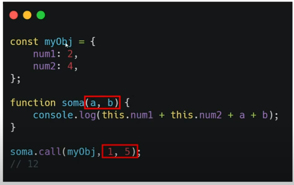

Segue o seguinte escopo:
(
function(){
let name = 'Paulo'
console.log(name)
}
)();
Esse tipo de função já é automaticamente chamada.
A função autoinvocável também pode receber parâmetros e também ser armazenada em uma variável.
Ex1:
(
function(a,b){
return a+b
}
)(1,2);
Ex2:
const soma3 = (
function(a,b){
return a+b
}
)(1,2);
É uma função passada como argumento para outra função.
EX:
const calc = function(operacao,num1,num2){
return operacao(num1,num2)
}
const soma = function(num1,num2){
return num1 + num2
}
const sub = function(num1,num2){
return num1 - num2
}
const resultSoma = calc(soma,1,2)
const resultSub = calc(sub,1,2)
No exemplo acima, a função calc espera como argumento uma função (logo é uma função callback, já que é recebida por outra função "principal") que por sua vez recebe dois argumentos para realizar uma determinada operação dada pela função callback.
function dividir(num = 0, den = 1){
return num/den
}
Nós podemos passar argumentos para uma função que inicialmente não esperava argumentos. Nesse momento é criado no escopo da função um objeto denominado arguments que recebe como chave um índice iniciado em 0 e como valor o próprio argumento.
function sum(x,y,z){
return x + y + z
}
const numbers = [1,2,3]
sum(...numbers)
Os elementos do array são separados e cada um deles é passado como argumento.
É o contrário de Spread: cria um array com os argumentos que foram passados separados na função.
function confereTamanho(...args){
console.log(args.length)
}
confereTamanho(1,2)
O rest é usado na declaração da função, o spread na chamada da função.
O Switch sempre faz uma comparação de idêntico (===).
O Switch sempre precisa de um "default".
O loop do for...in retorna a chave. O for...of retorna os valores.
A tabela abaixo tenta esclarecer qual a referência que o this faz dependendo do contexto no qual foi inserido.
No caso de evento, se colocarmos uma função que responda a um evento de clique em um botão o this dentro desta função
*******Tentei fazer um teste colocando o this fora de um método de objeto e ele simplismente não respondeu*********
O método call vai procurar um this dentro da função na qual ele está atuando e vai referenciar o this desta função ao objeto que foi o argumento passado para o método call. Confuso? Veja o exemplo:
Nós podemos também usar o call associado a mais argumentos de uma função. Ex:
A única diferença entre o call e apply é que neste quando na associação com outros argumentos de uma função os argumentos fora do this devem ser passados dentro de um array.
Retorna uma função substituindo o this.argumento pelo valor que tal argumento tem no objeto passado como parâmetro. Ex:
Instruções uma linha:
const nome_funcao = () => retorno
Instruções com mais de uma linha:
const nome_funcao = () => {
//instrução
//instrução
}
Funções com apenas um argumento não precisam encapsulá-lo em parênteses:
const nome_funcao = a => {
//instrução
//instrução
}
nome_funcao(6)
Arrow function NÃO faz hoisting, ou seja, a chamada dela tem que ser feita depois da sua declaração. O this em arrow function sempre referencia o objeto global. Não existe arguments em arrow function